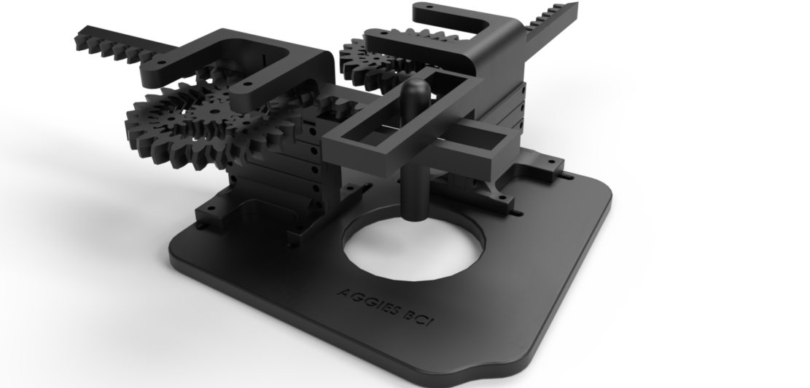
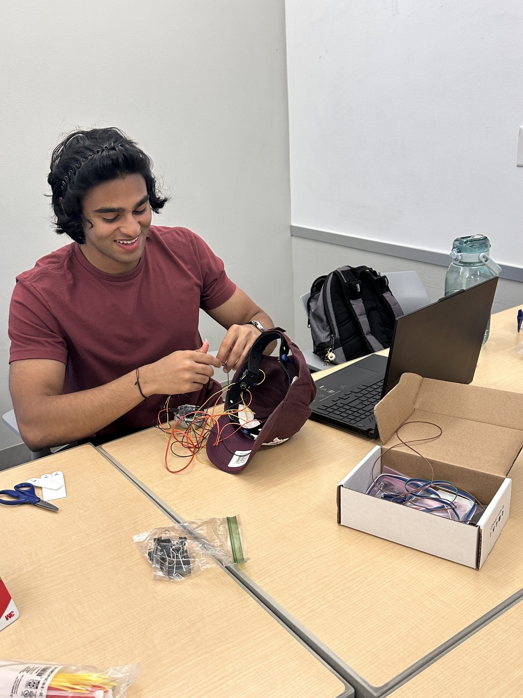
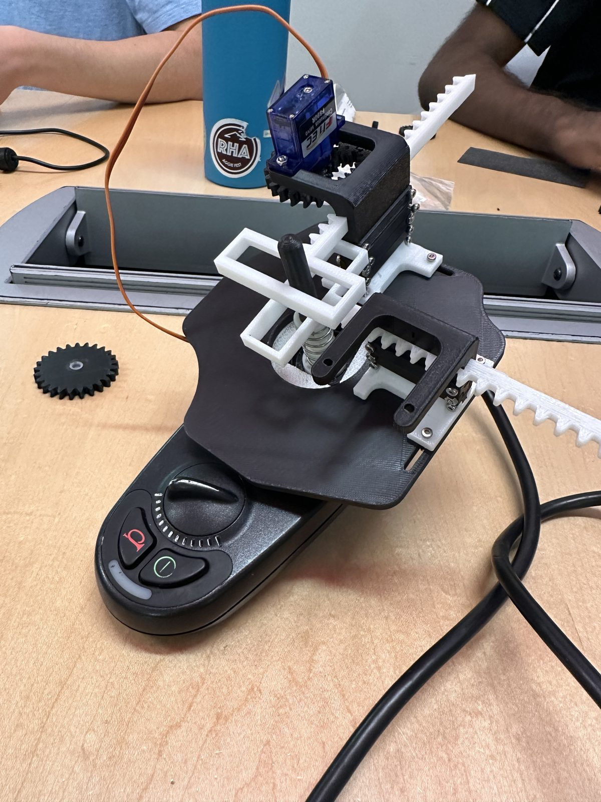
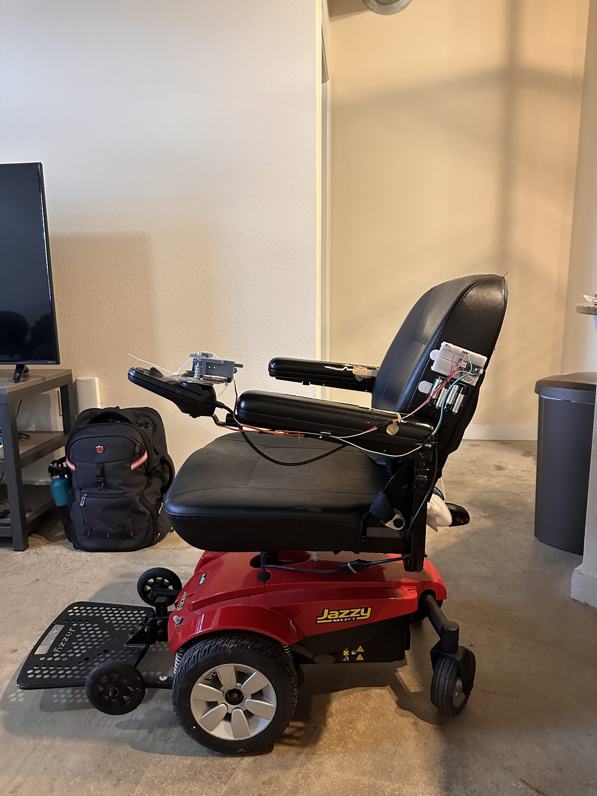
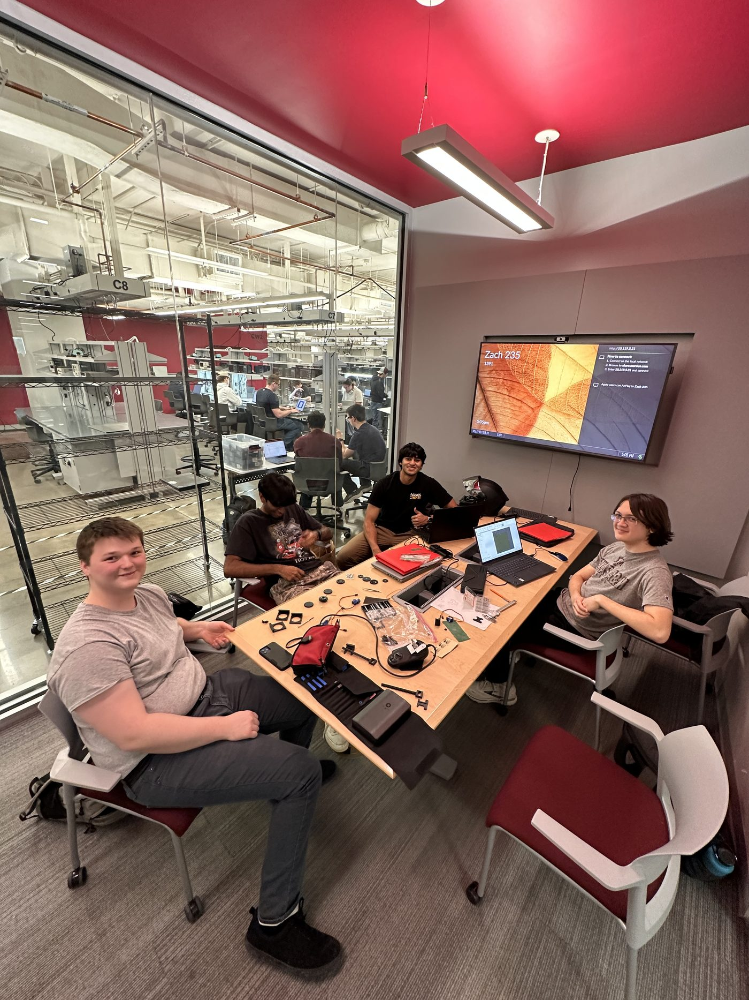

project · 2024 – 25

- Role
- Founder & Software Lead
- Team
- Daniel R., Garner L., Oswin Z., Pranav N. & me — Texas A&M
- Stack
- EMOTIV Insight EEG · Python (Cortex API) · Arduino · C
- Recognition
- Winner, Aggies Create Innovation Expo · supported by EMOTIV, OpenBCI & the Meloy Innovator's Grant

AggiesBCI lets someone drive an electric wheelchair with their thoughts — no joystick, no sip-and-puff straw, no head array. The brain-sensing comes from a commercial, non-invasive EEG headset; what we designed is the universal module that mounts onto the chair's own joystick and turns that headset's commands into real movement. We took it from a cardboard-and-hot-glue prototype to an engineered system, and along the way it placed first out of twenty teams at the Aggies Create Innovation Expo.
The problem
Around 5.4 million people in the U.S. live with some form of paralysis, and roughly 2.7 million use a wheelchair. For people with severe mobility impairment — quadriplegia, tremor, limited upper-limb function — the standard ways of steering a powered chair don't really work. About 40% of wheelchair users find joystick steering nearly impossible. Roughly 30% report neck pain after prolonged use of chin and head arrays, and sip-and-puff control degrades as soon as the user is short of breath.
The thread through all of these is that they demand fine, sustained physical control from people who have the least of it. We wanted to move the control signal upstream — to intent itself — without anything invasive.
How it works
An EEG headset reads the small voltages your brain generates, and a brain–computer interface learns to recognize patterns in those signals and map them to discrete commands. We used a commercial EMOTIV Insight: the user trains a neutral baseline and a handful of mental commands in EMOTIV's own software, and from then on the headset streams classified intent in real time. Our system picks up where that output leaves off.
From there the pipeline is deliberately simple:
- Acquire — the EMOTIV Insight captures EEG and classifies the trained mental commands.
- Interpret — Python, via EMOTIV's Cortex API, reads those commands and forwards them over serial.
- Actuate — an Arduino running C receives the command and drives the servos that move the chair's own joystick.
The key design decision is that last step. Rather than rewiring each wheelchair's electronics, the module physically actuates the existing joystick — so one device can fit many chairs without touching their internals. That module, not the headset, is the part we actually engineered, and it's where all the hard problems lived.

From a first-place hack to a real system
The version that won the Expo was, honestly, held together with household parts — cardboard shims to set the height, a linear actuator secured with hot glue and JB Weld, and no real safety system if the power cut out. It worked, it was convincing, and it proved the core idea. But it wasn't something you could hand to a person who relies on it.
The other problem was mechanical. Our first proper actuator was a rack-and-pinion that drove the joystick on both axes through a rigid collar. It worked in the middle of the range, but near the extremes — full forward, full right — the two racks started fighting each other and the mechanism would bind and stall. Worse, once it was overconstrained the joystick couldn't fall back to neutral on its own: its centering spring wasn't strong enough to overcome the friction we'd built into the linkage. For a wheelchair, a control that won't reliably re-center is a non-starter.
So for Aura v3 we redesigned the whole actuation system around a double-helical planetary gear differential rather than rigidly coupling the two axes. The differential distributes motion between the axes and leaves a bit of passive compliance in the system — exactly what the rigid version lacked. The jamming at the edges went away, and, the part I like most, the joystick re-centers itself: whenever the servos return to neutral or lose power, the mechanism rides the joystick's own spring back to center. We also added a small slot at the end of the rack linkage on purpose, to give the joint a little controlled play so tiny alignment errors couldn't push it back into a constrained state.

A few principles fell out of all this: never couple the two axes rigidly, leave some play in on purpose, keep friction at the joystick interface low, use gear reduction to smooth the torque instead of forcing the servos, and always let the joystick's native spring-centering win when the system is idle. The module is 3D-printed in PLA on a modular baseplate sized to a standard joystick, with a suspended-servo mount and adjustable spacing — joystick geometries vary between chairs more than you'd expect. We moved the data pipeline onto a Raspberry Pi Zero 2 and added a real safety mechanism: a Schottky-diode OR gate so the system fails safe on power loss.
One device, unlimited wheelchairs — non-invasive, modular, and built in-house.

My role
I founded the team and led the software. I wrote the control code in Python — using BrainFlow with the OpenBCI Ganglion on the early prototype, then the EMOTIV Cortex API once we switched headsets — to read classified commands and pass them over serial to the Arduino. On the firmware side I wrote the C that takes those commands and drives the servo and actuator movements. Earlier on, I validated the whole signal-to-motion loop on a Hexbug toy before we ever pointed it at a wheelchair, which let us debug the BCI pipeline without risking the real hardware.
The team & where it went
None of this was a solo effort. Garner handled CAD and prototyping, Oswin the electrical work, Daniel the biomedical side, and Pranav the market research — and the project leaned on a lot of generous support around us. The Meloy Innovator's Grant funded our first round of hardware, EMOTIV supported us with Pro access and media outreach, OpenBCI lent their support too, and we partnered with Aggies with Disabilities to start testing the system with the people it's actually for and to pressure-test how modular it really is.

By the time the project wound down, the plan was to solidify the second actuator prototype, run it with prospective users, and branch the BCI work toward other assistive interfaces — controlling a cursor and keyboard, or a grasping arm — by the same logic that started all of this: move the control signal up to intent, and meet people where their bodies are.